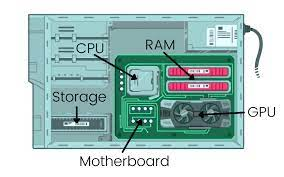

Motherboard
The motherboard is the central and most crucial component of a computer system. It is a printed circuit board that serves as the backbone for all other components, providing connectivity and communication pathways between various hardware components.
What is a Motherboard?
A motherboard, also known as a mainboard or system board, is a large printed circuit board that contains the essential components and circuitry required for a computer to function. It acts as a hub that interconnects and coordinates the various hardware components, including the central processing unit (CPU), memory (RAM), storage devices, input/output (I/O) ports, and expansion slots.

Key Components of a Motherboard
A typical motherboard consists of several essential components, including:
- CPU Socket: The CPU socket is a specialized connector that allows for the installation of the central processing unit (CPU). It provides electrical connections between the CPU and the motherboard, enabling communication and power delivery.
- Memory Slots: Memory slots, also known as DIMM (Dual Inline Memory Module) slots, are connectors that allow for the installation of random access memory (RAM) modules. The number of memory slots determines the maximum amount of RAM that can be installed on the motherboard.
- Chipset: The chipset is a set of specialized integrated circuits that manage the communication between the CPU, memory, and other components. It plays a crucial role in determining the capabilities and performance of the motherboard.
- Expansion Slots: Expansion slots, such as PCI (Peripheral Component Interconnect) or PCI Express (PCIe) slots, allow for the installation of additional hardware components like graphics cards, sound cards, network adapters, and storage controllers.
- I/O Ports: Input/output (I/O) ports, such as USB, HDMI, DisplayPort, and Ethernet ports, provide interfaces for connecting various peripherals and devices to the computer system.
- BIOS/UEFI Chip: The BIOS (Basic Input/Output System) or UEFI (Unified Extensible Firmware Interface) chip contains the firmware that initializes and configures the hardware components during the boot process.
Motherboard Form Factors
Motherboards come in various form factors, which determine their physical size and layout. Common form factors include:
- ATX: Advanced Technology Extended (ATX) is a widely used form factor for desktop computers, offering a standardized layout and size.
- Micro-ATX: Micro-ATX is a smaller variant of the ATX form factor, designed for compact desktop systems and mini-tower cases.
- Mini-ITX: Mini-ITX is an even smaller form factor, ideal for building ultra-compact and low-profile systems.
- Proprietary Form Factors: Some manufacturers use proprietary form factors, such as BTX (Balanced Technology Extended) or WTX (Workstation Technology Extended), which may offer specialized features or form factors for specific use cases.
Importance of the Motherboard
The motherboard is the foundation of a computer system, playing a critical role in connecting and coordinating all other hardware components. It determines the performance, compatibility, and expandability of the system. A well-designed and high-quality motherboard can provide reliable operation, support for modern technologies, and future-proofing for upgrades and additions.
Choosing the right motherboard is essential when building or upgrading a computer, as it influences factors such as CPU compatibility, maximum RAM capacity, available expansion slots, and supported technologies like PCIe generations, SATA interfaces, and USB standards.